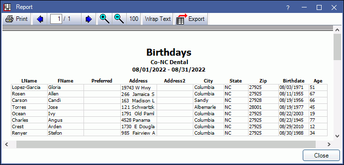

Birthday Report and Postcards
Run the Birthdays report to get a list of patients with birthdays in a specified date range and generate postcards.
In Standard Reports, in the Lists section, click Birthdays.

The Birthdays report is a list of all active patients (i.e., those with status of Patient only) who have birthdays within a specific date range. Users can also print postcards for each patient with a personalized message. There is also a birthday section in Laser Labels which prints sheets of labels.
To control user access to this report, see Report Setup: Security Permissions.
Report Customization
Date Range: Select the birthday range to include in the report.
- Left Arrow: Click to go back one month. The From and To dates will be updated to a date one month prior from the currently entered date range (e.g., if the currently entered range is 08/01/2022 to 10/31/2022, the date range will update to 07/01/2022 to 09/30/2022)
- Next Month: Click to enter dates for the next full month from the current date (e.g., if it is currently August 2022, dates will update to 09/01/2022 to 09/30/2022).
- Right Arrow: Click to go forward one month. The From and To dates will be udpated to one month after the currently entered dates (e.g., if the currently entered range is 08/01/2022 to 10/31/2022, the date range will update to 9/01/2022 to 11/30/2022).
- From / To: The current date range. Manually type a new date or use the buttons above to change the dates.
Postcards: Customize and generate postcards for patients with birthdays in the date range.
- Message: Personalize the postcard message. Three unique keywords can be used. These will be replaced with patient information on the postcard. Postcard messages have a limit of 465 characters. Any characters beyond that will be cut off on the printed postcard.
- ?FName: patient's preferred name. If no preferred name, uses first name.
- ?AgeOrdinal: patient's ordinal age, e.g., 44th, 22nd.
- ?Age: patient's age, e.g., 44, 22.
- Save Msg: Click to save any changes to the message for later use. If this is not clicked any changes will be reflected on Postcard Preview, but will not be saved when the Birthday Report is closed.
To edit the number of post cards that print on each sheet, see Setup Recall.
Generate Postcards
Click Preview to generate postcard a print preview of birthday postcards. Postcards can be printed from the preview window.

Print: Click to print the generated postcards.
Left Arrow / Right Arrow: Click to view additional pages of the print preview.
Close: Click to exit the postcard preview without printing.
Generate Report Preview
Click Report to generate a list of patients with birthdays in the selected date range. Below is an explanation of the report columns. For a description of toolbar buttons, see Complex Report System.
- LName: Patient last name.
- FName: Patient first name.
- Preferred: Patient preferred name.
- Address, Address2, City, State, Zip : Patient Address information as entered in Edit Patient Information.
- Birthdate: Patient birthdate as entered in Edit Patient Information
- Age: Age of patient will be as of their birthday.